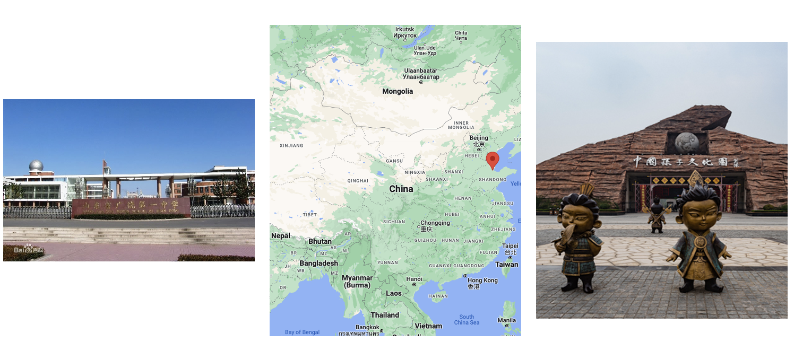

Who am I?
Childhood
Academic Journey

Current Position
Academic Profile
Dr. Hao Xu spent his childhood and adolescence in Dongying city, where he received his education until the age of 18. In 2011, he left his hometown and ventured to Beijing in pursuit of higher education, driven by his academic aspirations. At China Agricultural University (CAU), Dr. Xu spent four years studying and successfully earned a Bachelor of Science degree in Chemistry, in addition to a Bachelor of Economics degree in Finance upon completing his undergraduate studies.
In 2015, Dr. Xu made the decision to pursue a master program in Computational Chemistry. He chose Southern Methodist University (SMU) as his institution of choice to advance his education. His experience at SMU fostered a strong interest in programming and data science.
In 2017, Dr. Xu embarked on his academic journey at Boston College, where he pursued a Ph.D. in Chemistry. His research centered on advanced organic synthesis and quantum chemistry calculations. He successfully defended his dissertation in December 2022. During his Ph.D. studies, the COVID-19 pandemic brought about a global shift to national shutdowns and hybrid work arrangements. Seizing this opportunity, he enrolled in the Online Master of Science in Computer Science program at the Georgia Institute of Technology (GT) in August 2020, completing it alongside his Ph.D. in August 2022.
In 2023, Dr. Xu has joined the Department of Computer Science at Brandeis University as a postdoctoral associate in machine learning. His focus was on developing innovative machine learning and deep learning solutions to address complex chemical challenges, utilizing advanced techniques such as graph neural networks (GNN), graph convolutional networks (GCN), and others.
A year later, Dr. Xu has joined the Department of Medicine at Brigham and Women's Hospital & Harvard Medical School as a postdoctoral research fellow in AI and Medicine. In this role, he focuses on developing innovative AI-driven drug discovery approaches for cardiovascular disease.
Personal Profile
Interests and hobbies: playing basketball, fishing and cooking.
Favorite books: I Ching, Tao Te Ching.
Soft Skills: leadership, mentorship, critical thinking, problem solving and time management;